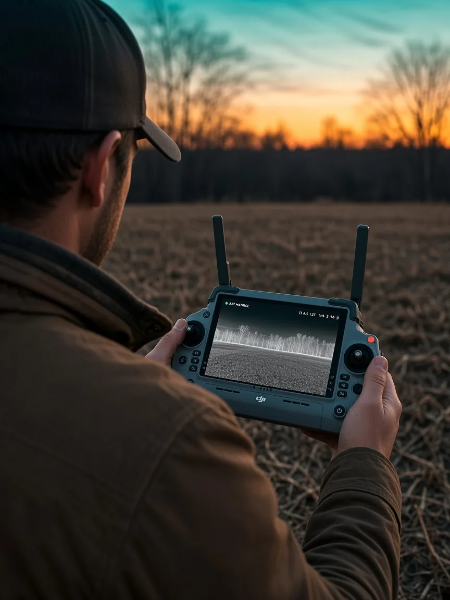
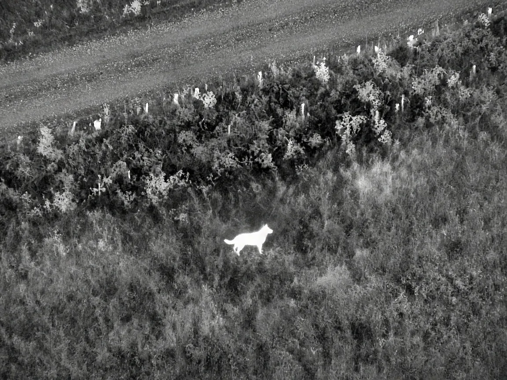
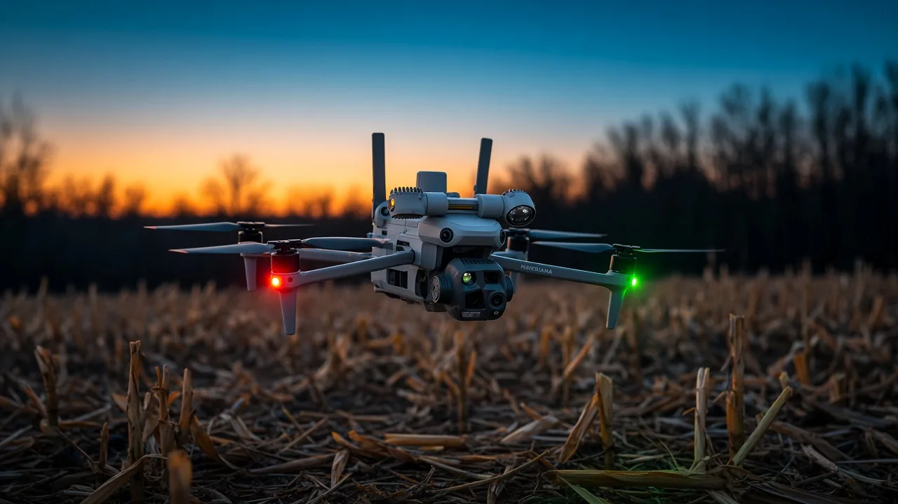
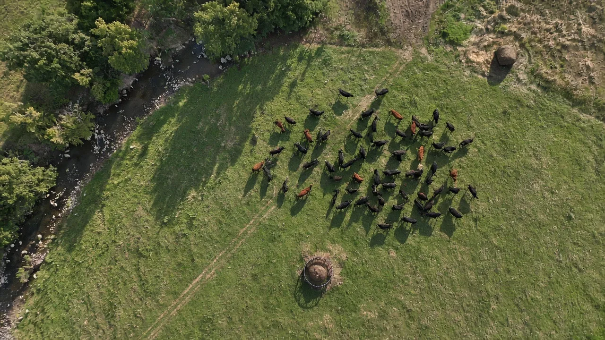

The call
Tell us what your pet looks like, where and when it was last seen, and how it acts around strangers. A recent photo helps us confirm a sighting.


Service 02 / 03Thermal search for lost pets
A frightened dog in a fencerow, or a cat out in a hayfield, is hard to spot from the road. From above, a warm body in cool grass is a lot easier to pick out.
(The problem)
Lost pets don’t behave like they do at home. Scared dogs go quiet and hide; cats tuck into cover and wait. A thermal drone can check fields, fencerows and woods edges quickly and quietly, without anyone crashing through the brush. When we see a warm shape, we confirm it on the zoom camera, then help you make a calm approach.
How a search works
Tell us what your pet looks like, where and when it was last seen, and how it acts around strangers. A recent photo helps us confirm a sighting.

We start from the last-seen spot and the routes animals tend to follow: creek banks, fencerows, tree lines and field edges.
The drone stays high and quiet so it doesn’t spook a nervous animal. Thermal works best in the cool of night and early morning.
Every heat signature is checked on the zoom camera first. Deer, coyotes and raccoons are warm too, so we make sure before anyone moves.
We guide you in quietly. Don’t call or chase: get low, stay calm and let your pet come to you.

Timeline
Describe your pet, where and when it was last seen, and how it behaves around strangers. Have a recent photo ready.
We talk through the likely places: fencerows, creek banks, outbuildings, the field edges near home.
The drone flies high and quiet so it doesn’t push a frightened animal further away.
Thermal passes over open ground and woods edges, where a warm body stands out against cool grass.
Any heat signature is checked on the zoom camera before anyone moves, so you don’t chase a deer or a raccoon.
We talk you in quietly. You make the approach, low and calm, and let your pet come to you.
Right now
Tick them off as you go. Then call.

Next service · 03 / 03Herd & Land SurveyingHerd counts and aerial land checksLost something out there?
Deer recovery, lost pets, herd counts and land checks across Parke County and the surrounding counties. Rates are on the Services page; call or text to get started.